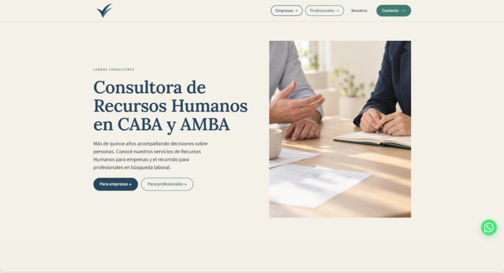
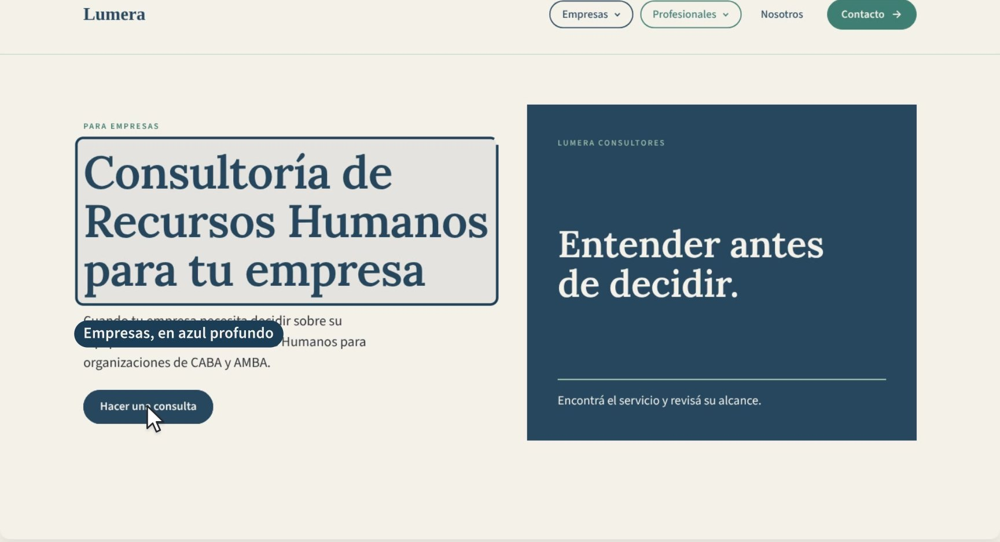
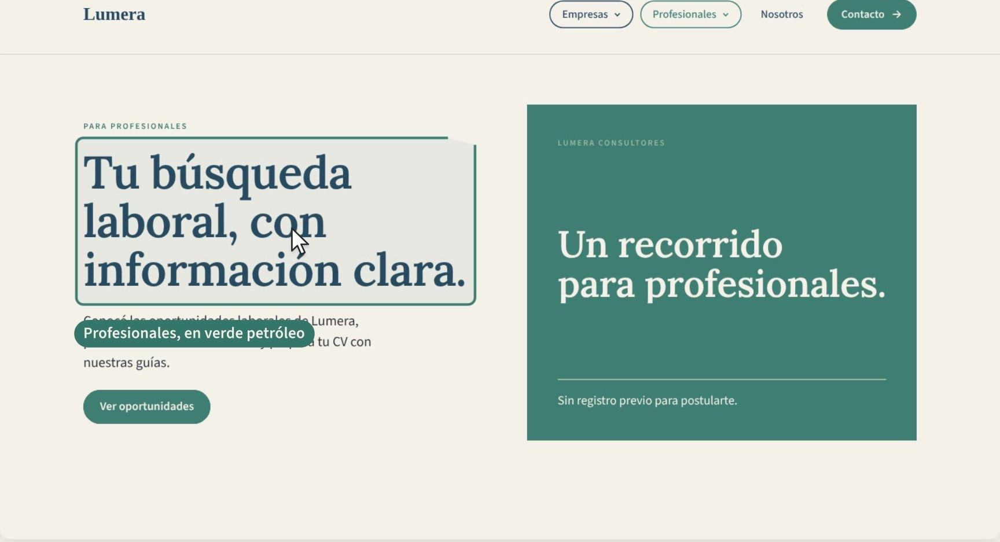
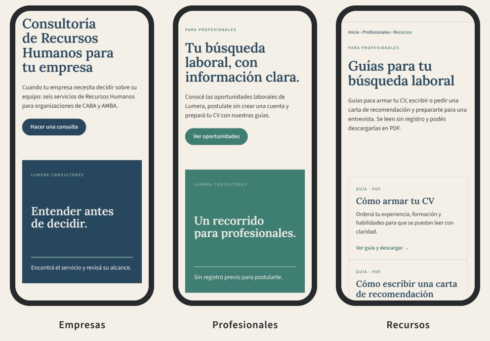

Liqui
Qué tomamos
Menú dividido por público y tarjetas de vacantes con la información clave a la vista.
En Lumera
Empresas y Profesionales visibles desde cualquier página, y oportunidades comprensibles antes de abrir el detalle.
Propuesta de experiencia digital y desarrollo web: una sola web, dos recorridos y una base preparada para comunicar, captar y medir.

De forma principalmente tradicional.
Sin estrategia de marketing digital consolidada.Casi siempre, por recomendación.
La mayoría de sus clientes llega por el boca a boca.No tiene sitio web.
Tampoco redes activas: nadie puede verificarla antes de contactarla.No mide ni registra.
Sin base de datos de clientes ni medición de resultados.Que una consultora que hoy depende de la recomendación pueda ser encontrada, entendida y contactada en internet, sin perder la confianza que ya construyó.
“Transformar la trayectoria de Lumera en una presencia digital clara, confiable y medible, que funcione como puerta de entrada en internet.”Objetivo del sitio · Parcial 1
Que Lumera pueda encontrarse y verificarse en buscadores, como complemento de la recomendación.
Los seis servicios confirmados, explicados desde la necesidad de cada empresa.
Recorridos simples, responsive y sin pasos de más hasta la acción.
Consultas empresariales calificadas a través de un formulario propio.
Oportunidades, postulación sin registro y recursos útiles para su búsqueda.
Analizamos sitios del sector para resolver tres problemas concretos: ordenar dos públicos, cuidar datos personales y explicar qué pasa después de cada acción.
Menú dividido por público y tarjetas de vacantes con la información clave a la vista.
Empresas y Profesionales visibles desde cualquier página, y oportunidades comprensibles antes de abrir el detalle.
Accesos siempre visibles para empresa y empleo, con consulta comercial y envío de CV separados.
Dos formularios distintos: F1 para consultas de empresas y F2 para postulaciones. Nunca se mezclan.
Ficha de oportunidad completa sin exponer al cliente, con nota de confidencialidad junto a la postulación.
Información suficiente antes de postular y el aviso de privacidad justo donde la persona entrega su CV.
Entender qué servicio resuelve su situación y quién está detrás antes de consultar.
Los seis servicios, cómo trabajamos, recursos para empresas y preguntas frecuentes.
Comercial: en cinco de los seis servicios quien contrata y paga es la empresa.
Saber qué búsquedas hay, qué piden y qué va a pasar después de postularse.
Oportunidades con datos clave, guías para su búsqueda y envío de CV.
En nuestra encuesta exploratoria, 40 de 41 profesionales valoran estar informados en cada etapa.
Una sola identidad Lumera
Sin selector obligatorio#173B57Marca, estructura, Empresas
#2F6F6ABotones, enlaces, Profesionales
#8FAF9FSuperficies de apoyo
#F4F0E8Fondo principal
#24292DTexto y contraste
Un solo botón principal por bloque, con verbo claro: “Hacer una consulta”, “Ver oportunidades”.
El color diferencia recorridos, pero nunca es la única señal: siempre hay título y etiqueta.



En escritorio, menú horizontal de cuatro ítems. En mobile, un botón “Menú” abre el panel completo.
Los botones principales aparecen en la primera pantalla de cada recorrido.
Tarjetas y formularios se apilan: un campo por fila, con ayuda debajo de cada uno.
390, 768 y 1440 px, sin desbordes horizontales en las páginas revisadas.
Empieza por la necesidad y muestra solo los campos pertinentes.
“¿En qué podemos ayudarte?” · “¿Cómo llegaste a Lumera?”Tarjetas con zona, modalidad, jornada y fecha, y vencimiento automático.
Se entienden antes de abrir el detalle.En la misma ficha, sin cuenta, con consentimiento y destino separado de las consultas.
“Usamos tu CV solo para esta búsqueda.”Artículos para empresas y guías con PDF descargable sin registro para profesionales.
Cada recurso enlaza a un servicio u oportunidad.Acordeones en Empresas, cada servicio y Profesionales: la respuesta aparece donde surge la duda.
Sin una página de FAQ aparte.En Empresas, servicios, Contacto e inicio. No se usa para postulaciones: esas van por F2.
Número y horario: a confirmar por Lumera.Si Astra o Elementor ya resuelven algo, no se suma un plugin. Menos dependencias, menos mantenimiento.
Gestor de contenidos: Lumera puede actualizar textos y oportunidades sin depender de código.
Liviano y responsive, con paleta y tipografías globales para respetar el prototipo.
Constructor de plantillas: acordeones, botones y bloques editables sin programar.
La marca todavía no se busca.Lumera no tiene búsquedas propias: quien no la conoce tiene que encontrarla por su necesidad.
Servicios con demanda baja y dispersa.Por eso cada servicio tiene su página y su palabra clave principal.
Más oportunidad en lo informativo.“Evaluación de desempeño” y “carta de recomendación laboral” aparecieron como las búsquedas más aprovechables.
Base técnica: una URL legible y una palabra clave principal por página, enlaces internos del recurso al servicio y datos estructurados con Rank Math.
Una campaña de búsqueda con 6 grupos, uno por servicio, segmentada a CABA y AMBA, con palabras negativas de empleo para no atraer postulantes, y destino en cada página de servicio.
Planificada y simulada · no publicadaDesde buscadores, redes, anuncios o recomendación.
page_view · UTMLa empresa entiende qué resuelve Lumera.
grupo de contenidoO clic a WhatsApp, como señal de intención.
generate_leadLumera responde. Se registra el origen y el estado.
Las postulaciones F2 se miden aparte (postulacion_enviada) y nunca cuentan como leads ni se envían a plataformas publicitarias.
“¿Cómo llegaste a Lumera?” es la única forma de ver la recomendación, que en analítica aparece como tráfico directo.
sesiones acumuladas en 3 meses
leads empresariales calificados
Fin del recorrido
→ Avanzá para la conclusiónUn lugar propio donde verificar quién es Lumera y qué hace, como complemento de la recomendación.
Empresas y Profesionales encuentran su recorrido, su contenido y su acción, bajo una misma identidad.
Seis servicios explicados, recursos, oportunidades y dos formularios separados por finalidad.
SEO desde la arquitectura y eventos definidos para medir desde el primer día de funcionamiento real.
No es solo un ejercicio de diseño: es la respuesta a necesidades concretas de Lumera, lista para validarse con datos reales.